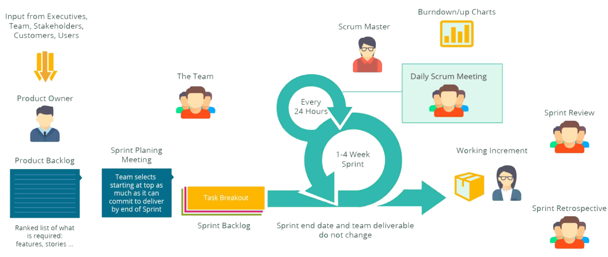

Scrum методологія розробки
“Скрам – це фреймворк управління, згідно з яким одна або кілька кросфункціональних самоорганізованих команд створюють продукт інкрементами, тобто поетапно. У команді може бути близько семи людей. У скрамі використовуються ітерації фіксованої довжини, які називаються спринтами. Вони зазвичай займають 1-2 тижні (до 1 місяця). Скрам команди прагнуть створювати готовий до постачання (якісно протестований) Інкремент продукту у кожній ітерації.” В даний час Scrum є однією з найбільш популярних методологій розробки ПЗ. Згідно з визначенням, Scrum - це каркас розробки, з використанням якого люди можуть вирішувати проблеми, при цьому продуктивно і виробляючи продукти найвищої значущості.
Коротка історія
Уперше скрам було застосовано в 1993 році в Easel Corporation. Ініціатива походила від Джефа Сазерленда, Джона Скамніоталеса та Джефа МакКени. Компанія потребувала розробки програмного продукту і повної зміни діючої пропозиції за рекордний термін — 6 місяців. Швидкої розробки програмного забезпечення, об’єктно-орієнтованого дизайну, циклу PDSA і skunkworks Сазерленду було мало, і він став сотнями вивчати статті про пришвидшення процесів в організації. З однієї з них, статті Bell Labs про команду Borland Quattro Pro, він виніс ідею про короткі командні зустрічі. Та вирішальною все ж виявилася стаття Такеючі й Нонаки.
Концепція Scrum методології


Як це працює?
Основою Scrum є Sprint, протягом якого виконується робота над продуктом. Після закінчення Sprint має бути отримана нова робоча версія продукту. Sprint завжди обмежений за часом (1-4 тижні) та має однакову тривалість протягом усього життя продукту. Перед початком кожного Sprint проводиться Sprint Planning, на якому проводиться оцінка вмісту Product Backlog та формування Sprint Backlog, що містить завдання (Story, Bugs, Tasks), які мають бути виконані у поточному спринті. Кожен спринт повинен мати мету, яка є мотивуючим фактором і досягається за допомогою виконання завдань із Sprint Backlog.
Щодня проводиться Daily Scrum, на якому кожен член команди відповідає на запитання «що я зробив учора?», «що я планую зробити сьогодні?», «Які перешкоди на роботі я зустрів?». Завдання Daily Scrum — визначення статусу і прогресу роботи над Sprint, раннє виявлення перешкод, вироблення рішень зі зміни стратегії, необхідних досягнення цілей Sprint'а. По закінченню Sprint'а виробляються Sprint Review та Sprint Retrospective, завдання яких оцінити ефективність (продуктивність) команди в минулому Sprint'і, спрогнозувати очікувану ефективність (продуктивність) у наступному спринті, виявленні наявних проблем, оцінки ймовірності завершення всіх необхідних робіт по продукту та інше.
Kanban методологія розробки
Методологія Kanban — це система постановки завдань, коли всі етапи проекту візуалізуються на спеціальній дошці. Члени команди можуть бачити поточний стан завдання будь-якої миті часу. Це передбачає повну прозорість роботи. Kanban відносять до agile-підходів - "гнучким" технологіям, призначеним для розробки програмного забезпечення. За ведення дошки відповідальні усі учасники команди. Будь-який залучений у процес співробітник може переміщати готові картки на дошці. Така структура забезпечує наочність виконання. Можна переглянути поточний статус завдання та своєчасно виявити проблеми. При роботі з kanban команда єдина - всі рішення ухвалюють спільно. Є менеджер проекту, але він не керує, а організовує роботу. Проект поділяють на ітерації, довжина яких може бути різною. Також, щодо канбан-методології не передбачено чіткого дотримання конкретних етапів. Команда сама визначає, що і коли їй зручніше робити. Наприклад, підбиття підсумків здійснюють наприкінці кожного місяця, планування беклогу — після завершення завдань, спільні обговорення — за необхідності. Але робота над проектом триває безперервно.

Коротка історія
Вперше Kanban почала застосовувати компанія Toyota у 1950-х роках. Автор методу Тайіті Воно надихнувся схемою супермаркетів, коли покупець сам обирає потрібні товари. Робочі компанії стали обмінюватися сигнальними картками з докладним описом «завдання» — номер та чисельність деталей, хто надсилає або виробляє, хто отримує. Керуючись досвідом Toyota, kanban на виробництві стали застосовувати інші компанії. З його допомогою вдалося організувати робочі процеси на кшталт конвеєра — кожен наступний цех призначав план виробництва продукції попередньому цеху. Це допомагало знизити надвиробництво та зайве затарювання складів.
Як це працює?
Для спрощення контролю робочий процес візуалізують на дошці, поділеній на колонки. Кожна колонка – це поточний стан робіт. Безпосередньо завдання відображають у канбан-картках – там можна прочитати їх опис, рівень важливості та додаткову інформацію. Коли завдання завершує певний етап, картку з її описом переносять відповідну колонку. Поглянувши на дошку, можна відразу зрозуміти, як ситуація з проектом.

Канбан-дошки бувають фізичними та електронними. У першому випадку це звичайна дошка зі стовпцями. Завдання пишуть на стікерах і наклеюють у потрібний розділ, переміщуючи за необхідності. Електронні дошки мають аналогічні функції, але в порівнянні з фізичними, завжди доступні - віддалені співробітники можуть безперервно брати участь у робочому процесі.
Порівняльна характеристика

Scrum

Наголос на багатофункціональну команду

Scrum орієнтований на клієнта
Простий у вивченні
Визначає невелику кількість правил
Можливість легко внести зміни

.png)
Kanban
Обмеженість учасників команди
Найменша тривалість ітерацій
Швидке виявлення проблем
Короткостроковість планування
Гнучкість планування

Короткий висновок
Більшість гнучких методологій націлені на мінімізацію ризиків шляхом зведення розробки до серії коротких циклів, які називаються ітераціями, які зазвичай тривають два-три тижні. Кожна ітерація сама по собі виглядає як програмний проект у мініатюрі та включає всі завдання, необхідні для видачі міні-приросту за функціональністю: планування, аналіз вимог, проектування, програмування, тестування та документування. Така методологія була розроблена ще на початку 2000-х як альтернатива малоефективним традиційним IT методам. Основною метрикою agile-методів є робочий продукт. Віддаючи перевагу безпосередньому спілкуванню, agile-методи зменшують обсяг письмової документації порівняно з іншими методами.

Scrumban методологія розробки
Scrumban — сучасний метод-гібрид, який використовує безперервний робочий процес із Kanban разом із корисними елементами Scrum, що дозволяє вирішити проблеми обох підходів. Важливо уточнити, що повністю опанувати Скрамбан вдасться тільки в тому випадку, якщо ви володієте методикою Scrum і методикою Kanban. У Scrumban командна робота організована у вигляді невеликих ітерацій та контролюється за допомогою візуальної дошки, аналогічної Scrum та kanban-дошкам. Щоб проілюструвати кожен етап роботи, команди, що працюють в одному просторі, часто використовують стікери або велику дошку. Зустрічі щодо планування проводяться для визначення того, які історії користувачів потрібно завершити в наступній ітерації. Потім користувальницькі історії додаються на дошку, і команда завершує їх, при цьому команда працює над декількома історіями користувача одночасно, наскільки це доцільно (ліміт незавершеної роботи або незавершеної роботи).